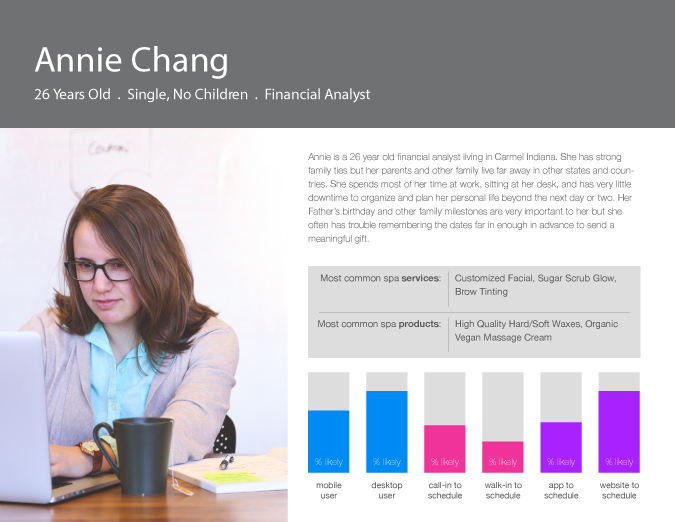

Michelle's Hidden Spas App
iPhone app concept designI was approached about this project by a development team from India that I had worked with on a number of Drupal 7 website projects a few years back (they handled backend development, while I developed the concepts, designs, and front-end).
What you see here are the first round concept designs based on observation and feedback through multiple meetings with the Spa Owner and a few of her clients.
As you can see, I started with wireframes and user personas before creating the actual UI design and layouts for these screens. Although they are not the complete set (many more screens are needed before actual development can begin), they do effectively show the overall design approach.

- 